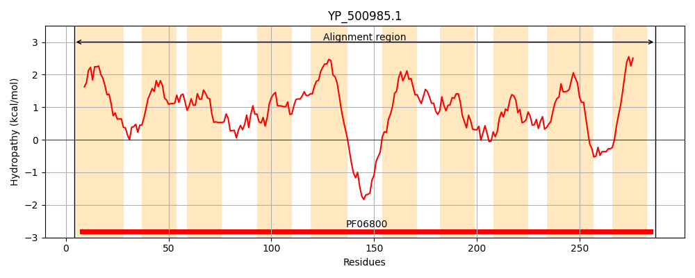
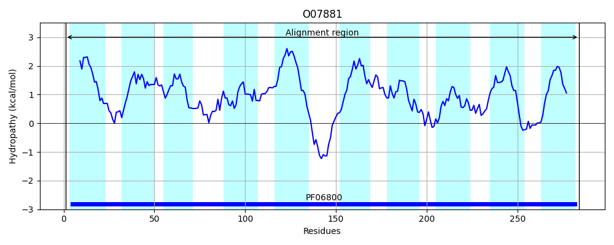
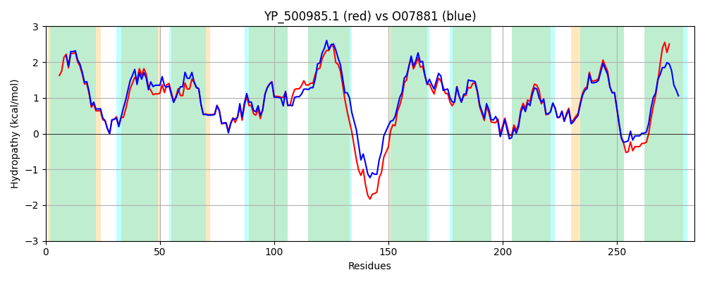

Hit Accession: O07881
Hit TCID: 2.A.7.5.1
Hit Description: gnl|BL_ORD_ID|6815 gnl|TC-DB|O07881|2.A.7.5.1 GLUCOSE UPTAKE PROTEIN - Staphylococcus xylosus.
Mach Len: 284
e:0.000000
Query TMS Count : 10
Hit TMS Count: 10
TMS-Overlap Score: 9.100000
Predicted Substrates:CHEBI:5418;glucose
BLAST Alignment:
Score: 1068 , Bit scores: 416 bits, E-value: 5.0e-148, Alignment length: 284, Percentage identity: 73
Query: 4 LDFLIALLPALFWGSVVLINVFVGGGPYNQIRGTTLGALIVGLGLLITGFAKFNNPTVIIVGLISGALWAFGQANQLKSISLIGVSNTMPVSTGMQLVGTTLFSVIFLGEWSSMTQIIFGLIAMILLVTGVALTSLKAKNERQSDNPEFKKAMGILIVSTVGYVGFVVLGDIFGVGGTDALFFQSVGMAIGGFILSMNHKTSLKSTALNLLPGVIWGIGNLFMFYSQPKVGVATSFSLSQLLVIVSTLGGIFILGERKDRRQMTGIWAGIIIIVIAAIILGNLK 287
+D LIALLPALFWGSVVLINV VGGGPYNQIRGTT GALI+G+ LL+TG AKF++ T+IIVGLISGA WA GQ QLKS+SLIGVS TMP+STG+QLVGTTLFS IFLGEWS+ Q+ GL+AM+LLV G+ALTS+K KNE + F KAM IL++STVGYV +VV+ IFGV G +ALFFQS+GMAIGG ILS H+TS+KST NL+PG++WGIGNLFMFYSQPKVGVATSFS SQLLVIVSTLGGIF+LGE+KD+RQM GIWAGI++IVIA + LK
Sbjct: 1 MDLLIALLPALFWGSVVLINVLVGGGPYNQIRGTTFGALIIGIILLLTGNAKFDDLTIIIVGLISGAFWALGQGYQLKSVSLIGVSKTMPISTGLQLVGTTLFSAIFLGEWSTGVQVTLGLVAMVLLVIGIALTSIKGKNEASESSKNFGKAMPILLISTVGYVVYVVVAQIFGVDGMNALFFQSIGMAIGGLILSAKHETSVKSTLWNLIPGIVWGIGNLFMFYSQPKVGVATSFSFSQLLVIVSTLGGIFLLGEKKDKRQMIGIWAGIVLIVIAPLYSEILK 284 | Protein Hydropathy Plots: |
|---|
|  |  |
Pairwise Alignment-Hydropathy Plot:
|
|---|
|  |